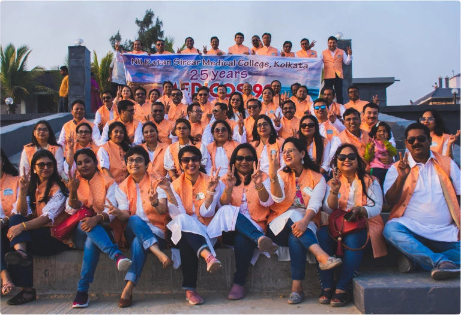
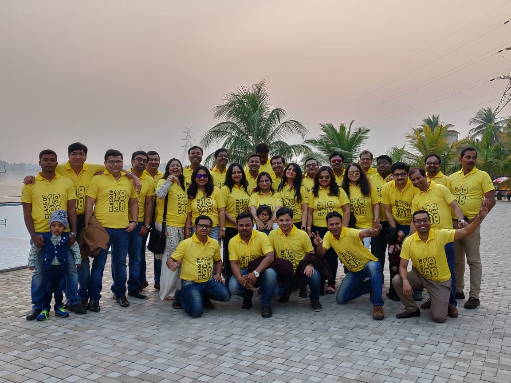
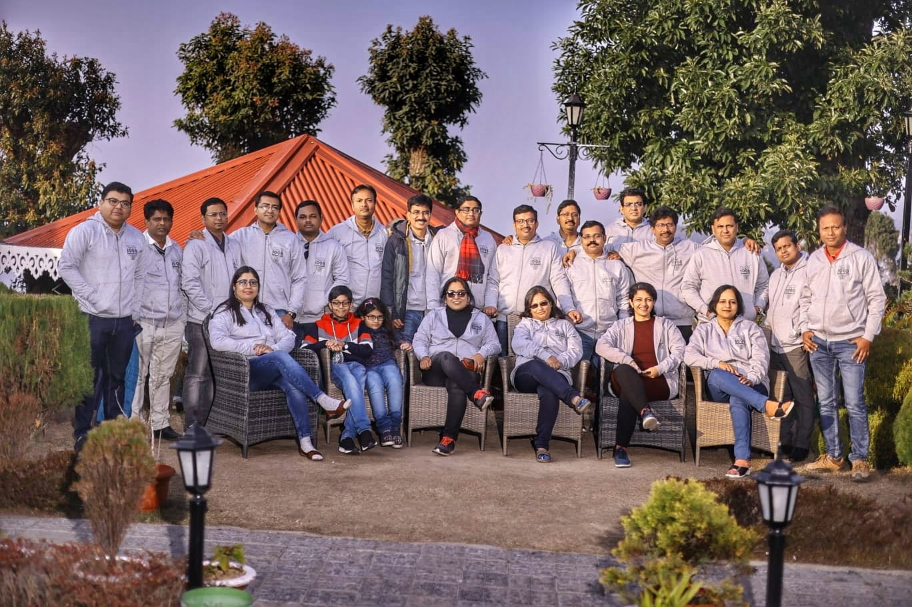
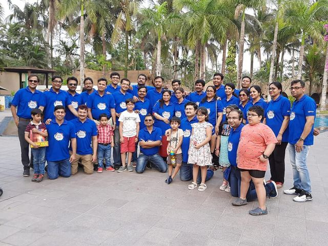
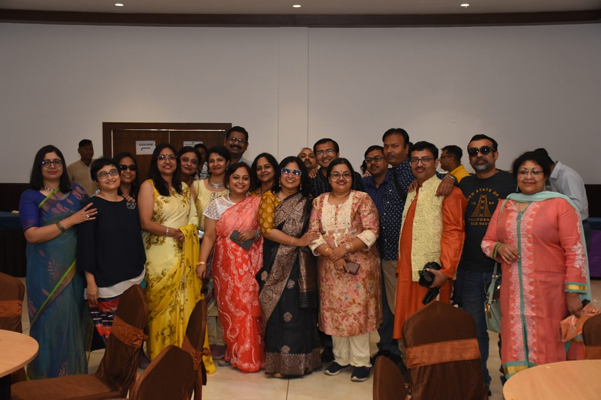
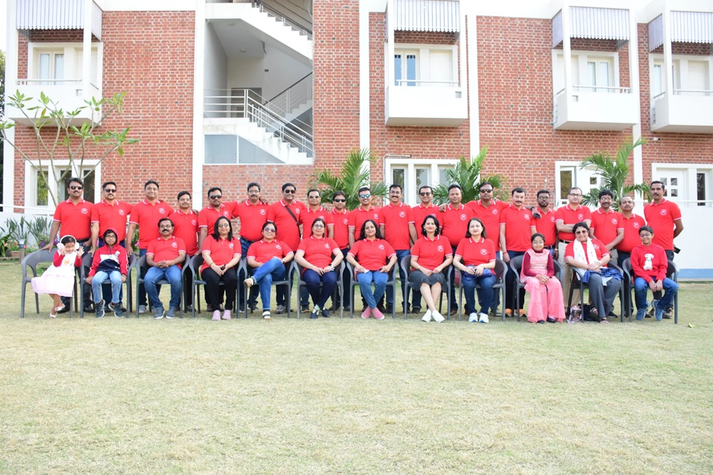
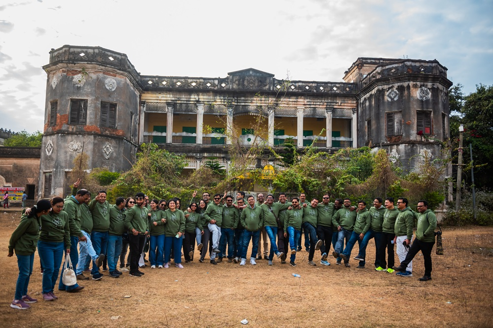

NIL RATAN SIRCAR MEDICAL COLLEGE
Different journeys. Different destinations.
One beginning. One bond. One batch.
Welcome to the official website of the MBBS Batch of 1998, Nil Ratan Sircar Medical College & Hospital. This platform celebrates our friendship, achievements, reunions and lifelong journey together.
Doctors
Years Together
Reunions
Alumni Network
Counting the days until we meet again...
Every reunion is more than just a gathering. It is a celebration of friendship, memories, achievements and the everlasting bond created at Nil Ratan Sircar Medical College.
Upcoming Reunion Details
Moments that made our journey unforgettable.





